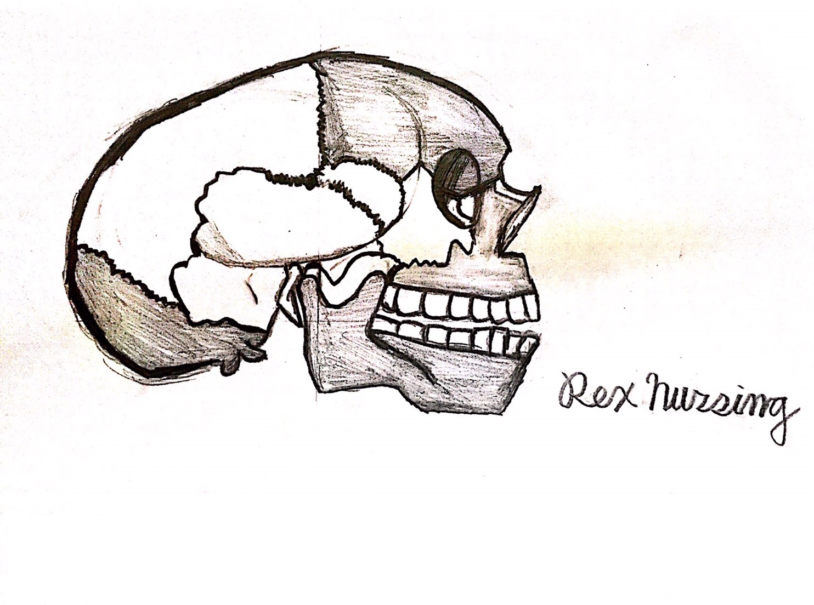
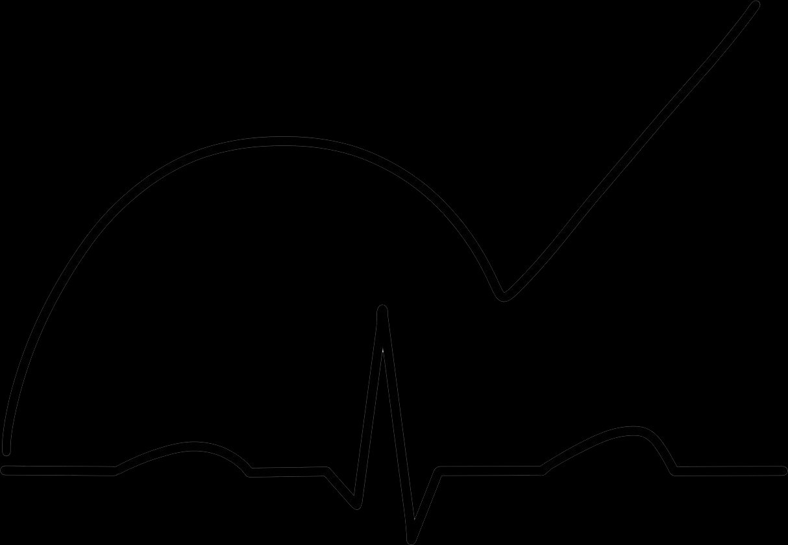

🏥 護理師國考自主學習頻道不補習，也能考上
護理師國家考試
Rex 自己讀書不靠補習班，成功通過國考。
每支影片用邏輯解題，不死背，
幫你建立真正屬於自己的備考實力。
護理師國考免費影片，內外科護理學、基本護理學、精神科護理、婦兒科護理、護理行政考題解析
考題逐題解析・邏輯破題不死背
內外科 × 精神科 × 基護 × 婦兒科 × 護理行政
愛迪生危機的特徵 — 高血鉀？還是其他選項？
內外科內分泌系統
 基護#1316
基護#1316滴數計算 — 精密輸液套管 300 mL 4 小時怎麼算？
基護計算題攻略
 婦兒科#43
婦兒科#43 護理行政#1022
護理行政#1022護理行政解題 — 我國最高衛生行政機關為何？
護理行政行政法規
準備好開始備考了嗎？
訂閱頻道，1,300+ 支影片全部免費，每支用邏輯帶你破解考題
📥
FREE RESOURCE
免費考古題下載
Rex 整理的歷屆護理師國考考古題，完全免費，下載後直接練習！
完全免費
📁
護理師國考考古題資料夾
存放於 Google Drive，點擊下方按鈕前往資料夾，
選擇你需要的科目直接下載！
📥 前往 Google Drive 下載開啟後按右上角「下載」即可存檔・建議登入 Google 帳號
📌 如何有效使用考古題？
① 先看 Rex 的影片了解觀念，再做對應的考古題練習
② 做錯的題目記下來，去影片留言問 Rex
③ 重複練習同類型題目，找出出題邏輯
考古題 + 影片解析，雙管齊下
不懂的題目直接投稿，Rex 幫你解析
Rex Nursing
護理師 × YouTuber@rexnursing
Rex 考國考時自己讀書、沒有補習，一樣順利考上。深知備考時找資料、整理邏輯的辛苦，因此開始製作影片，讓每位備考生都能用「聽的」來複習，用邏輯解題而不是死背。
影片裡有任何不懂，歡迎直接在留言區提問，Rex 喜歡被問學理問題！偶爾也會分享國考以外的醫學知識。
訂閱頻道，不錯過任何新影片
1,300+ 支影片全部免費，每支用邏輯帶你破解考題